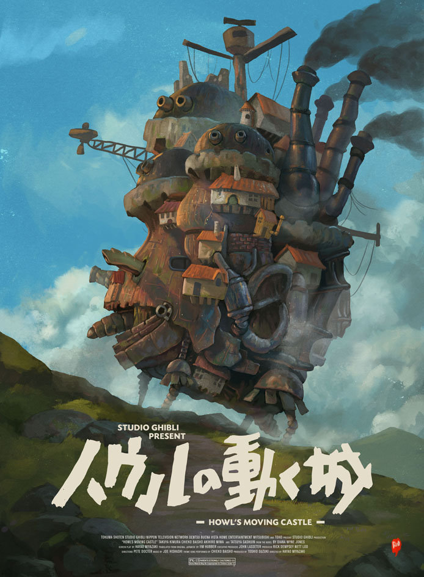

HOME

Howl's Moving Castle
《哈尔的移动城堡》
(2021)
《哈尔的移动城堡》是由宫崎骏导演继动画电影《千与千寻》后，吉卜力工作室推出的动画电影。《哈尔的移动城堡》带有宫崎骏动画特色的作品，故事改编英国奇幻文学作家戴安娜·韦恩·琼斯在1986年的著作《魔幻城堡》（Howl's Moving Castle）。
《哈尔的移动城堡》讲述在19世纪的欧洲世界，史柏丽王国里出现了会移动的城堡。苏菲在前往探望蕾蒂的路上被军官搭讪，不知该如何摆脱时冒出了哈尔搭救。之后遇见荒野女巫及得知哈尔曾与苏菲见面，为了报复苏菲，对她下了变老的诅咒。苏菲变老后决定离家出走但在路上救了稻草人，稻草人为苏菲引来了哈尔的移动城堡的故事。